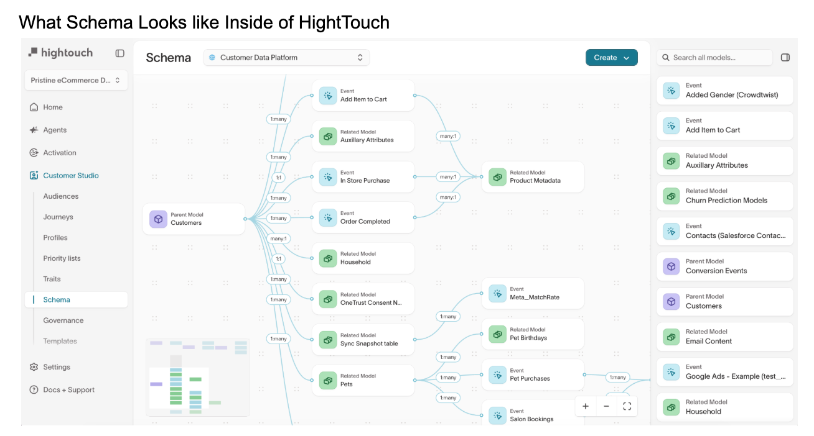
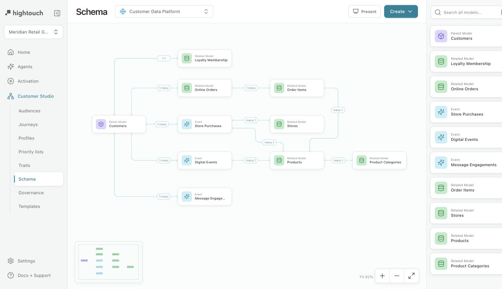

Final full-view comparison · default state
Both views are normalized into the same 1280 × 720 comparison viewport.
Reference · Hightouch Customer Studio

Implementation · Meridian schema prototype
